Generation


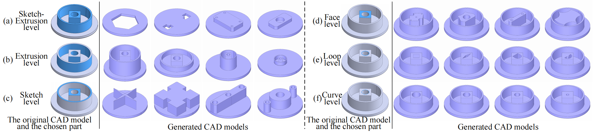
FlexCAD: Unified and Versatile Controllable CAD Generation with Fine-tuned Large Language Models
ICLR 2025

Don’t Mesh with Me: Generating Constructive Solid Geometry Instead of Meshes by Fine-Tuning a Code-Generation LLM
arXiv 2024


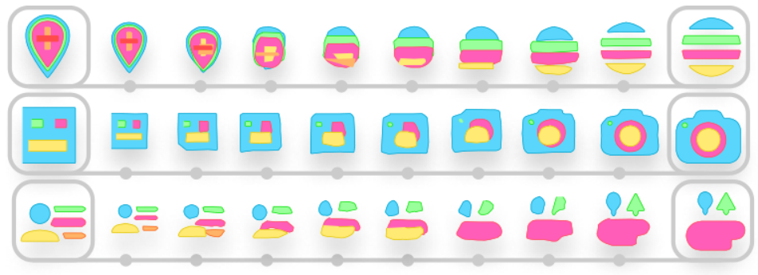


Reconstruction


Img2CAD: Conditioned 3D CAD Model Generation from Single Image with Structured Visual Geometry
arXiv 2024
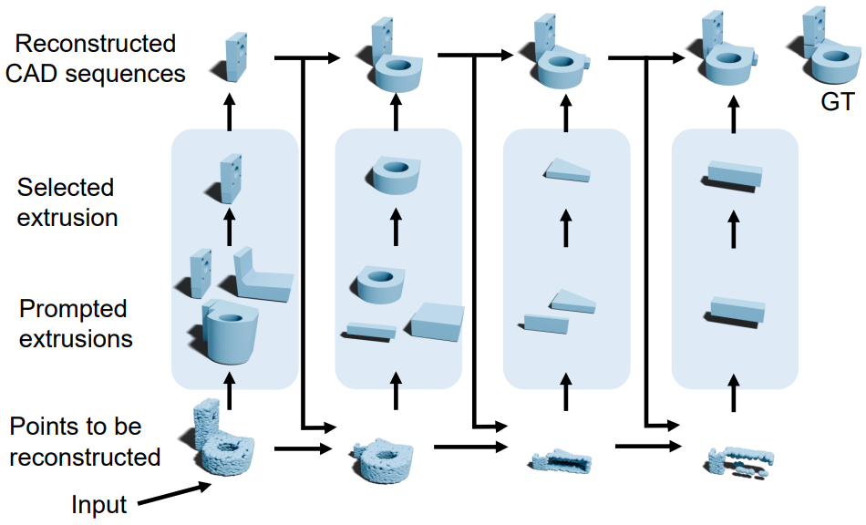

Draw Step by Step: Reconstructing CAD Construction Sequences from Point Clouds via Multimodal Diffusion
CVPR 2024
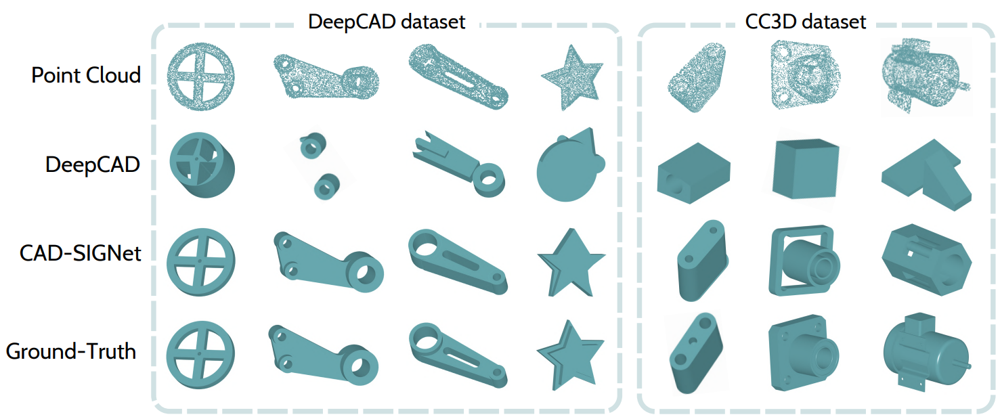
CAD-SIGNet: CAD Language Inference from Point Clouds using Layer-wise Sketch Instance Guided Attention
CVPR 2024
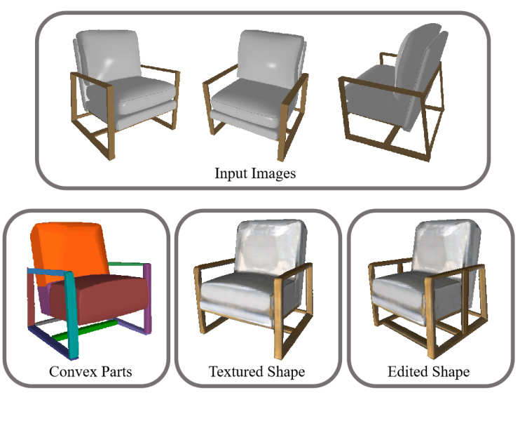
DPA-Net: Structured 3D Abstraction from Sparse Views via Differentiable Primitive Assembly
ECCV 2024


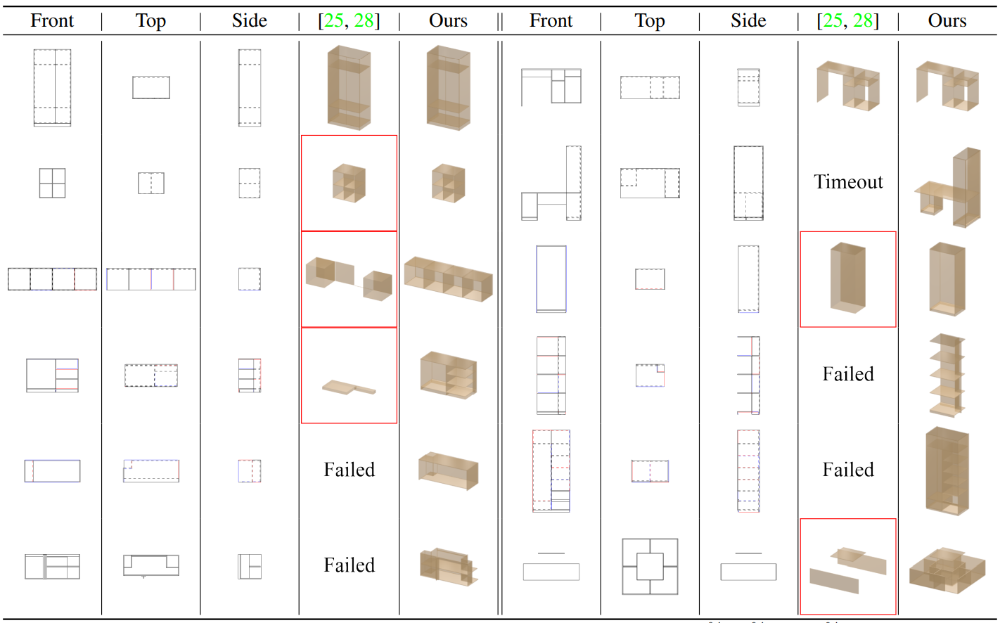


CADOps-Net: Jointly Learning CAD Operation Types and Steps from Boundary-Representations
3DV 2022

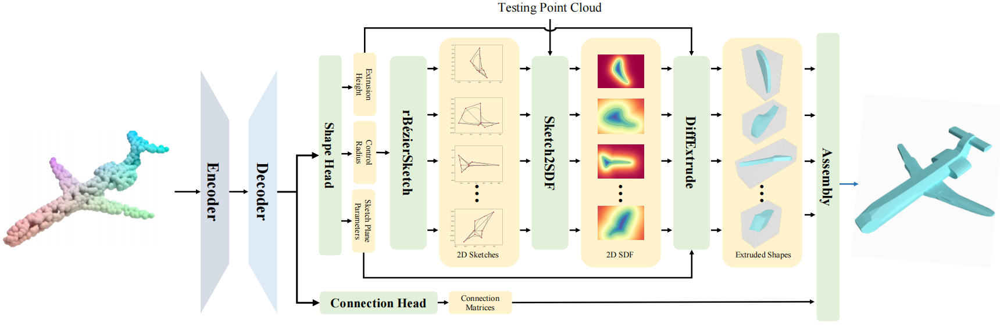
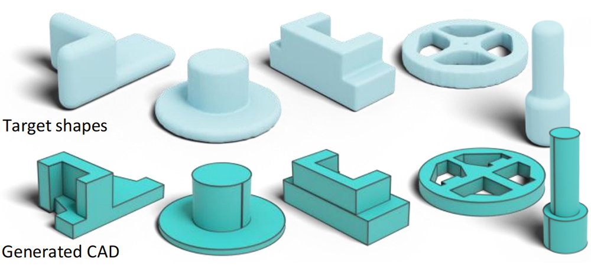


Abstraction

ShapeLib: Designing a library of procedural 3D shape abstractions with Large Language Models
arxiv 2025
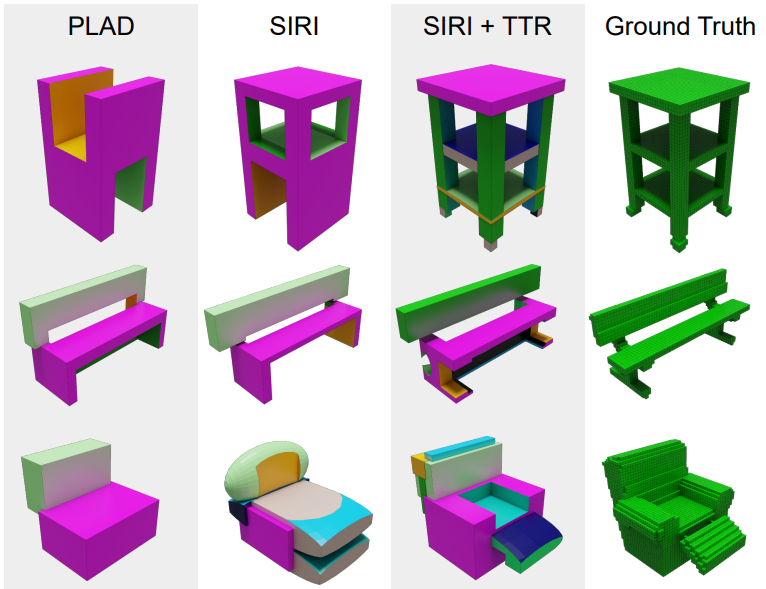


Analysis
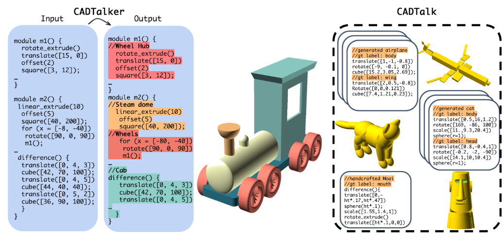
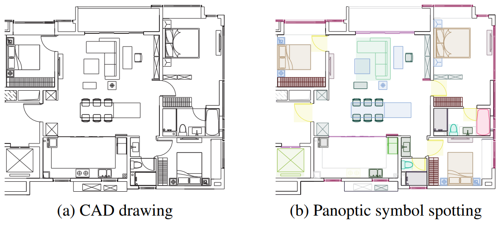


Dataset